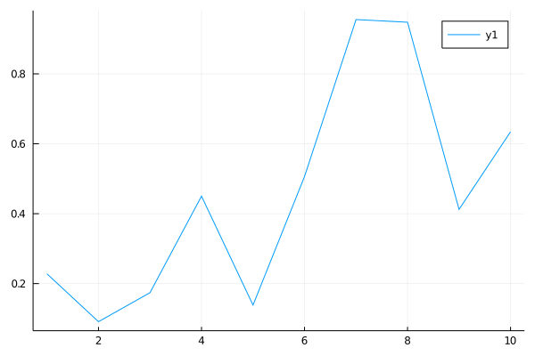

My Julia Notebook
Table of Contents
1 The REPL
The REPL is a quick and dirty console for julia. It allows quick code execution and immidiate
In order to clear the history of the REPL use C-l
2 Data Variables
Julia is composed from the following literal data types:
- Int
- Float
- String
- Char
Which is similar to any other language.
a = 2 b = 3.0 c = 'c' d = "Julia" println("Hello World!") return d
2 3.0 'c': ASCII/Unicode U+0063 (category Ll: Letter, lowercase) "Julia" Hello World! "Julia"
3 Operations
3.1 Broadcasting assignment
4 Arrays
4.1 Definition and declarations
A simple way to instatiate an array would be :
arr = [1,2,3,4,5] str_arr = {"Hello", "Dean"} # There is also an array of functions func_arr = [sin, cos, tan]
You can specify the type and the dimensions of an array using Array{type}(dims)
(notice that upper-case “A”), putting the type in curly braces, and the
dimensions in the parentheses. The undef means that the array hasn’t been
initialized to known values.
4.2 Multi dimensional arrays
4.2.1 2D arrays
Lets see two ways to create an array of one dimension, and see the differences.
vector1 = [1 2 3 4 5] vector2 = [6,7,8,9,10]
1×5 Array{Int64,2}:
1 2 3 4 5
5-element Array{Int64,1}:
6
7
8
9
10
As you can see, vector1 is actually a row vector. In other words, it’s a matrix of
\(1\times 5\). In contrast, vector2 is a column vector (just an array) with 5 elements.
From here we will show how to define a matrix with Julia.
my_matrix = [1 2 3 ; 4 5 6 ; 7 8 9]
Comment - It important to notice the differences.
- If in the brackets our elements are separated by commas, then it is a vector (or a regular array)
- If in the brackets our elements are separated by semicolons, then its is a row vector.
Another comment
Using the function rand(k) from the Core library, it will create for us a vector of k elements.
But, if we will use it like rand(5,1)
arr1 = rand(5) arr2 = rand(5,1)
4.2.2 Useful Alises
In order to help us not confuse between those two types, Julia also features the following aliases:
- Vector
- An alias for a standard array.
- Matrix
- An alias for a Array with two dimensions.
Vector(undef, 5) Matrix(undef, 3,3)
4.2.3 Range
In Julia, we use a colon : for different purposes. One use is the define a sequence of numbers.
for n in 1:5 print(n,",") end
You can also build a vector using range.
collect(1:5)
The collect(a:b) function will return a vector consisting of elements between \(a\) and \(b\)
with a difference of 1. The function collect(a:b:c) will return a vector of elements between
\(a\) and \(c\) with a difference of \(b\) between them.
collect(1:2:10)
4.3 Filling an array
4.3.1 Comprehensions and Generators
A useful way to create arrays where each element can be produced using a small computation is to use comprehensions.
[n^2 for n in 1:5]
If you would use two iterator, you cancreat a matrix (or a 2D array).
[r*c for r in 1:3, c in 1:3]
You can also add a condition to the for loop like so:
[i^2 for i in 1:5 if i!=3]
4.3.2 With zeros or ones
In order to fill an array with zeros use the function zeros(m,n)
zeros(2,3) zeros(3) zeros(Int64, 2,2)
The same thing goes for ones and random values.
rand(range, m, n) creates a matrix full of numbers in the supplied range:
ones(Int64, 3,3) rand(1:6, 3,3)
4.4 Arrays of arrays
It’s easy to create an array of arrays. Sometimes you want to specify the original contents:
arr_of_arr = Array[[1,2], [3,4]]
4.5 Reshape and Range
Another useful function is range(), which constructs a range object that goes from a
start value to an end value taking a specific number of steps of a certain size.
You don’t have to calculate all the information, because Julia calculates the missing
pieces for you by combining the values for the keywords step(), length(), and stop().
For example, to go from 1 to 100 in exactly 12 steps:
my_range = range(1, stop = 100, length=12) # And now construct a vector from that range collect(my_range)
You can use the range() function to create vector-like arrays,
followed by reshape() to change them into 2D arrays:
a = reshape(range(0, stop=100, length=30), 10, 3)
With the reshape() function, you could of course just create a simple array and then change its shape:
reshape(1:8, 2,4) reshape(10:21, 4,3)
4.5.1 Modifying an Array
To add an item to an array we use push!
a = collect(1:10) push!(a,20)
In order to add elements in specific indices, we use splice!(array, /range/, /range to replace/).
The function returns an array of the elements being replaced.
a = collect(1:10) splice!(a, 1:2, 12:13) a
If the amount of elements that we want to add is larger the amount of element to be replaced, it will still work. The array grows larger to accommodate the new elements, and elements after the inserted sequence are pushed down.
If you don’t supply a replacement, you can also use splice!() can remove elements and move the rest of them along.
4.5.2 Other methods
Arrays in julia have more methods that might be useful:
ndims- returns the number of dimensions.size()- returns a tuple of and rows and columns.length()- returns the amount of elements.count(condition, array)- returns a integers counting the ones that conform to the condition.union(arr1,arr2,...arrN)- returns an array uniting the array.intersect(arr1,arr2,...arrN)- returns an array containing the mutual elements.filter(function, array)- returns the array that contains the elements that comply to the function.
Methods like filter() and intersect() do NOT change the array, but returning a copy of it.
In order to change the array, we add ! to the function name, like filter!(function, array).
5 Tuples
A tuple is an ordered sequence of elements, like an array. A tuple is represented by parentheses and commas, rather than the square brackets used by arrays. Tuples are mostly good for small fixed-length collections. The important difference between arrays and tuples is that tuples are immutable.
t = (1,2,3,4,5,6,7,8,9,10) t[6:end]
5.1 Named tuples
A named tuple is like a combination of a tuple and a dictionary. Like a tuple, a named tuple is ordered and immutable, and enclosed in parentheses; like a dictionary, each element has a unique key that can be used to access it.
shape1 = (corner1 = (1, 1), corner2 = (-1, -1), center = (0, 0)) shape1.corner1
shape1 = (corner1 = (1, 1), corner2 = (-1, -1), center = (0, 0)) point1, point2, point3 = shape1 point1
6 Structs
Julia defines composite types just like struct in C. A composite type can hold
multiple values. It cannot hold functions.
A struct in Julia by default is immutable and a it is considered a good practice to use the structs as immutable as possible.
A struct has a constructor and it’s values can be accessed through the . operator
just like C.
Keep in mind that the user is not required to define the type of the variables, but it has running time benefits so it is a good practice as well, if the variable is meant to be in a specific value.
6.1 Immutable
Creating a struct (or a composite type)
struct Coordinates lat::Float64 lon::Float64 end # Instantiating a struct NYC = Coordinates(40.730610, -73.935242) # Accessing values of the struct NYC.lat
6.2 Mutable
Structs can be immutable as well, if needed. It is defined in an almost identical manner.
mutable struct movie_ticket price::Int64 movie_name::String end blockbuster = movie_ticket(30, "Terminator") blockbuster.price = 20 blockbuster
7 Functions
There are various syntaxes for defining functions:
When the function contains a single expression
g(x,y) = sqrt(x^2 + y^2) g(3,4)
When the function contains multiple expressions
function functionname(args) print("Function format") end
- Functions with variable number of arguments
function fvar(args...) println("you supplied $(length(args)) arguments") for arg in args println(" argument ", arg) end end fvar(1,2,3,4)
When the function doesn’t need a name Sometimes you don’t want to worry about thinking up a cool name for a function. Anonymous functions — functions with no name — can be used.
# x -> x^2 +2x -1 map(x -> x^2 +2x -1, 1:3)
8 Use of \(\LaTeX\) in Julia
9 Documentation
10 Modules
To load a module, two main keywords can be used: using and import. To understand their differences, consider the following example:
module MyModule export x, y x() = "x" y() = "y" z() = "z" end
In this module we export the x and y functions (with the keyword export), and also have the non-exported function p. There are several different ways to load the Module and its inner functions into the current workspace:
| Import command | What is brought into scope |
|---|---|
using MyModule |
All export -ed names. You call them using MyModule.x |
using MyModule:x,z |
Imports only x and z. |
import MyModule |
MyModule.x, MyModule.y, MyModule.z |
import MyModule.x,MyModule.z |
x, z |
import MyModule:x,z |
x, z |
include("file1.jl") |
Import a file. |
11 Packages
12 CSV handling
13 Plotting
Plotting is made using the Plots.jl package.
13.1 A simple example
The simplest use case would be to create a 2D plot as follows:
using Plots x = 1:10 y = rand(10) print(typeof(y)) plot(x,y) savefig("example.png")

Figure 1: Simple Plot.
13.2 Multiple lines
Often we would need multiple lines in our plot. It is fairly straight forward.
We are just adding another collection to our plot() function.
using Plots # Functions f(x) = x^2 g(x) = sqrt(x) # range x0 = 0 x1 = 5 # values of the functions f_values = [f(i) for i in x0:x1] g_values = [g(i) for i in x0:x1] # the second argument in plot() function gives two set of values # they need to be in form of two columns y_values = [f_values, g_values] plot(x0:x1, y_values , title="Square root and square", labels= ["x^2" "sqrt(x)"]) savefig("poly_sqrt.png")

#+RESULTS